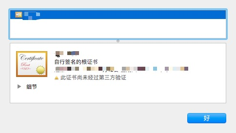
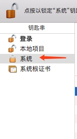

前言
之前使用Laravel做过几次PHP开发，但是由于很长一段时间没有再使用，这次重新拿起来感觉十分生疏，所以特此写下这篇文章，以备后用，当然，最近做的PHP项目也多了起来，可能也不会再用到这篇文章了吧。
创建项目
composer create-project laravel/laravel project_name
添加Git
git init
git remote add origin git@url
修改Homestead.yaml文件
sties:
- map: test.dev
to: /home/vagrant/test/public
追加Hosts
cd /etc; sudo vim hosts
追加新的sites，这里需要注意的一点是，hosts文件需要保持格式才能正常工作：
设置好site之后，最好使用cat hosts命令查看一下hosts的格式是否正确，如果没有对齐的话，需要重新调整。我由于习惯使用sublime text所以使用了sublime来编辑hosts，在sublime中看着格式是正确的，但是通过cat hosts查看之后发现其实是错的，所以这里最好还是使用vim进行编辑。
配置好之后发现Chorme中不是私密连接的错误

这个时候点击浏览器地址栏的不安全，选择证书下边的无效:
将点击后出现的证书拖拽出来，然后导入到keychain的系统栏中：


最后将导入的证书设置为永久信任即可。